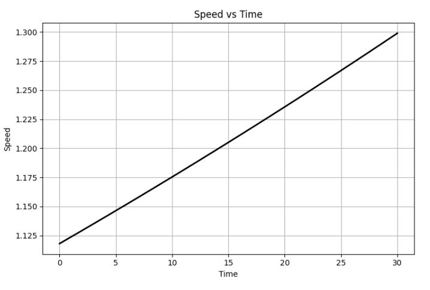
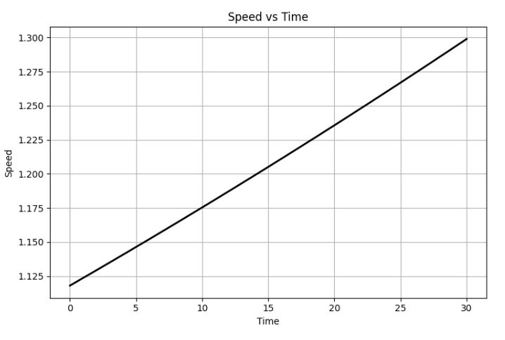

Simulating the Effects of the Lorentz Force
Introduction
The Lorentz force governs the interaction of charged particles with electric and magnetic fields, described mathematically as:
Understanding this force is essential in various fields such as particle physics, astrophysics, and engineering technologies like particle accelerators and plasma confinement systems. This simulation project extensively explores the behavior of charged particles under different electromagnetic field conditions.
Theory and Background
Lorentz Force
The Lorentz force consists of:
- Electric force (\(q\mathbf{E}\)): Acts in the direction of the electric field, changing particle velocity magnitude.
- Magnetic force (\(q\mathbf{v}\times \mathbf{B}\)): Perpendicular to both particle velocity and magnetic field, modifying trajectory direction without changing speed.
The dynamics of a particle under this force follow Newton's second law:
Numerical methods such as the Runge-Kutta method are employed to solve these equations.
Exploration of Applications
Particle Accelerators
Charged particles are guided by magnetic fields, achieving high speeds through periodic electric field acceleration, essential for experiments in particle physics.
Mass Spectrometry
Magnetic fields differentiate particles based on their mass-to-charge ratios, enabling accurate chemical analyses and isotopic identification.
Plasma Confinement
Magnetic confinement in fusion reactors relies heavily on controlling particle trajectories, maintaining stable plasma conditions necessary for fusion.
Simulations
Comprehensive Python Implementation
Here is a robust and clear Python implementation illustrating particle trajectories under varied electromagnetic conditions:
import numpy as np
import matplotlib.pyplot as plt
from scipy.integrate import solve_ivp
# Define Lorentz force equations
def lorentz_force(t, state, q, m, E_func, B_func):
pos, vel = state[:3], state[3:]
dposdt = vel
dveldt = (q/m) * (E_func(pos, t) + np.cross(vel, B_func(pos, t)))
return np.concatenate([dposdt, dveldt])
# Field scenarios
field_scenarios = {
'Uniform Magnetic Field': (lambda r, t: np.zeros(3), lambda r, t: np.array([0, 0, 1])),
'Combined Fields': (lambda r, t: np.array([0, 1e4, 0]), lambda r, t: np.array([0, 0, 1])),
'Crossed Fields': (lambda r, t: np.array([1e4, 0, 0]), lambda r, t: np.array([0, 0, 1]))
}
# Simulation parameters
q, m = 1.6e-19, 9.11e-31
initial_state = np.array([0, 0, 0, 1e6, 1e6, 0])
t_span, t_eval = (0, 5e-8), np.linspace(0, 5e-8, 5000)
for scenario, (E_func, B_func) in field_scenarios.items():
solution = solve_ivp(lorentz_force, t_span, initial_state, args=(q, m, E_func, B_func), t_eval=t_eval)
fig = plt.figure(figsize=(12, 6))
# 3D Trajectory
ax = fig.add_subplot(121, projection='3d')
ax.plot(solution.y[0], solution.y[1], solution.y[2], label=scenario)
ax.set_xlabel('X (m)')
ax.set_ylabel('Y (m)')
ax.set_zlabel('Z (m)')
ax.set_title(f'3D Trajectory - {scenario}')
ax.legend()
# 2D Projection
ax2 = fig.add_subplot(122)
ax2.plot(solution.y[0], solution.y[1])
ax2.set_xlabel('X (m)')
ax2.set_ylabel('Y (m)')
ax2.set_title(f'2D Projection - {scenario}')
ax2.grid(True)
plt.tight_layout()
plt.show()
 

Parameter Exploration
Examining how trajectory changes with:
- Electric field magnitude (\(\mathbf{E}\))
- Magnetic field strength (\(\mathbf{B}\))
- Initial velocity (\(\mathbf{v}\))
- Particle charge and mass (\(q,m\))
helps in understanding particle behavior under various real-world conditions.
Visualization
- Circular trajectory: Observed clearly in uniform magnetic fields.
- Helical trajectory: Occurs with combined fields.
- Drift trajectory: Highlighted clearly under crossed fields, showcasing constant drift perpendicular to both fields.
Visualization clearly demonstrates important physical parameters:
- Larmor Radius: \(r_L = \frac{mv}{qB}\)
- Drift Velocity: \(v_d = \frac{E \times B}{B^2}\)
Extensions
Future simulations may incorporate:
- Non-uniform fields for realistic plasma containment scenarios.
- Time-varying fields to simulate dynamic environmental interactions.
- Relativistic dynamics for high-speed particle simulations.
Conclusion
This detailed simulation effectively illustrates the fundamental and applied aspects of the Lorentz force, providing significant insights into electromagnetic particle dynamics, supporting theoretical understanding and practical applications.